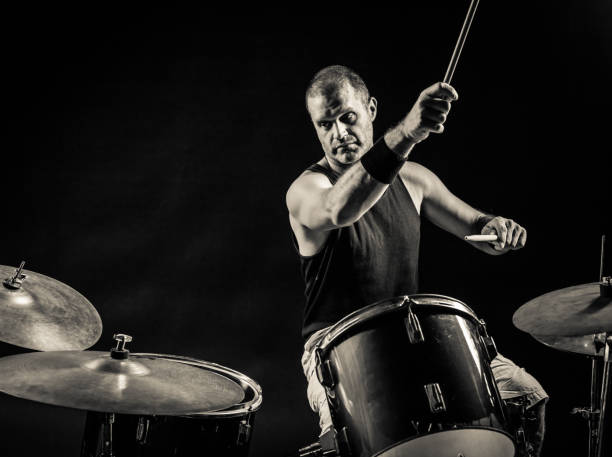
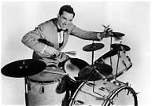
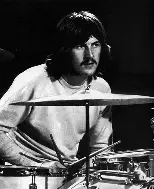
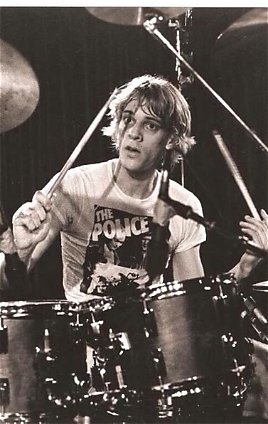

Drumming Drum Drum!

Here you will learn about notable drummers who had a lasting impact on drumming as a whole, and who inspired millions of drummers all over the world with their unique styles and confidence on the drum kit.
Who are some notable drumers?
Buddy Rich

Buddy rich was an incredibly talented drummer who played from 1937 up until his death in 1987. Buddy rich primarily drummed in Big Bands, and had his own band called The Buddy Rich Big Band that was formed in 1966. Buddy Rich is widely considered to be one of the most skilled and technical drummers in history for his lightning-fast speed with single-stroke rolls, and his precision while hitting the drums.
Buddy Rich was not only a drummer during his lifetime, from 1942 to 1944 Rich served in the U.S Marines, and from 1945 to 1948 he led the Buddy Rich Orchestra.
John Bonham

John Bonham, also known as Bonzo, was the drummer of Led Zeppelin. Bonham wasn't special because of how hard he hit the drums, it was because he had an incredible sense of groove, rhythm, and musical instinct.
His pocket was incredibly deep and he had incredible drum technique, and especially on his bass drum when he played incredibly fast patterns using just his single foot. John Bonham knew how to make a song feel and groove amazingly well and was praised for this throughout his career.
John Bonham didn't just make his beats flashy and impressive, but he made them extremely musical, and is why he is considered to be one of the greatest Drummers to have ever lived.
Ringo Starr

Ringo Starr (Richard Starkey), was the main drummer of The Beatles. He is one of the most influential drummers in history. What made Ringo so influential and incredible was not complicated, diffult, or loud drumming and technique, but instead his amazing sense of tempo and being able to make even the simplest drum pieces fit perfectly into songs and sound melodic and musical.
Some can argue that Ringo underplayed a lot but he actually played exactly what was needed for songs. Ringo created drum parts that followed melodies and knew when to use space or silence. Ringo Starr's influence can be heard in drummers like Phil Collins and Dave Grohl.
Drumming was not the only thing that Ringo Starr brought to the Beatles, he had a very relaxed personality, Musical consistency, and Humour and light-heartedness. He knew how to adapt to the other members different musical ideas. Ringo Starr is no doubt one of the most influential drummers in history.
Stewart Copeland

Stewart Copeland was a member of The Police and a musician who could make a simple song sound rhythmically complicated while keeping the groove. Copeland had super fast and precise movements on the kit and had unique hi-hat combinations. Stewart Copeland took ideas from genres like Reggae, new wave, and punk rock and implicated them into his drumming smoothly.
Copeland would often use syncopated rhythms and rhythmic spaces between notes in his drumming. Copeland also played with high energy which contributed to how great The Police's grooves and beats were. Stewart could make a beat sound like it is constantly moving. Copeland grew up in the Middle East and was exposed to arabic rhythm and music from a very early age.
Copeland drew inspiration from drummers like Buddy Rich and Joe Morello alongside other Rock Drummers. Copeland helped make The Police who they are today. He was extremely talented and is very influential.